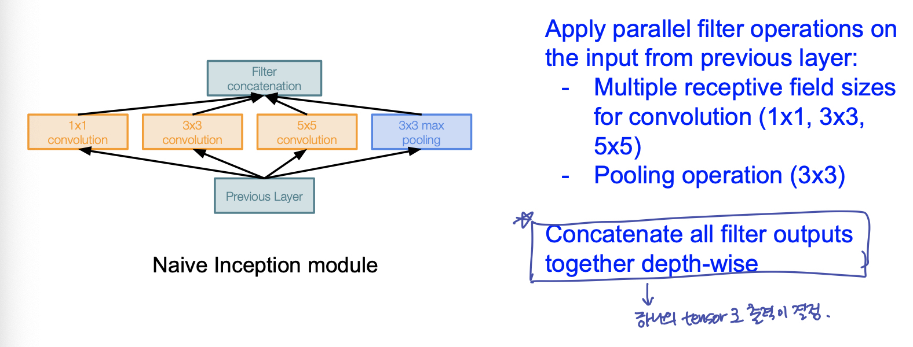
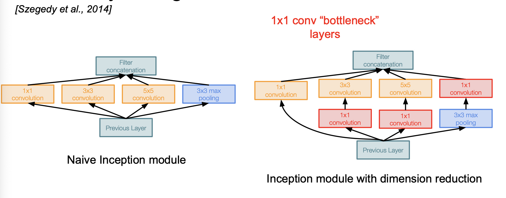
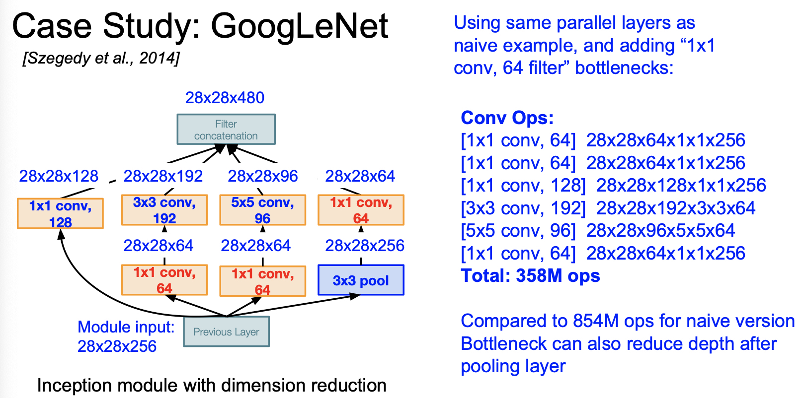
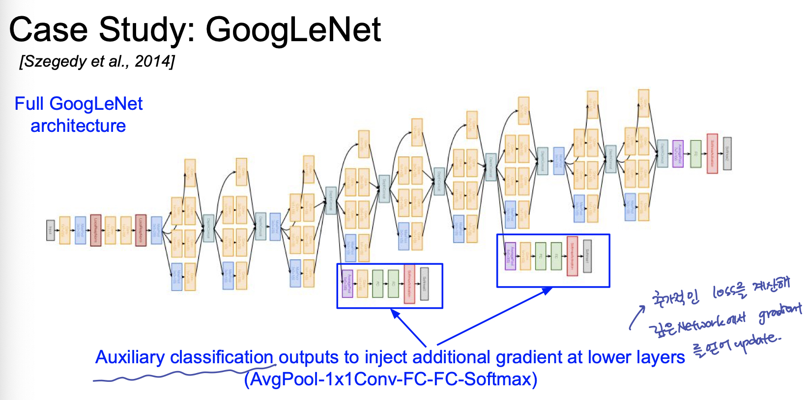
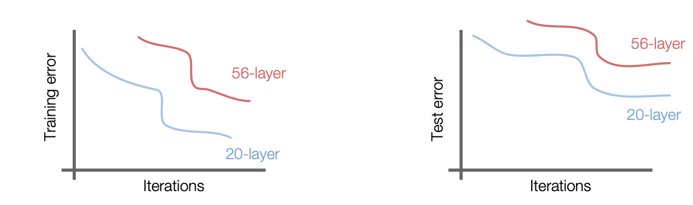
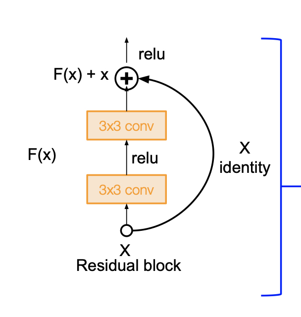

Lecture 09: CNN Architectures
- 이 글은, Standford University 의 CS231n 강의를 듣고 스스로 정리 목적을 위해 적은 글입니다.
이번 강의에서는 최초의 CNN 모델부터, ImageNet 대회에서 역대 좋은 스코어를 기록한 유명한 convnet 구조에 대해 살펴본다. 강의 summary 는 강의 내용 중심과 수업 중 궁금한 사항을 따로 찾아본 내용 위주로 정리한다. 해당 모델의 자세한 내용은 논문을 참조했다.
1. AlexNet
Lenet 이후, 가장 처음으로 나온 large scale convnet model 이다. Architecture 는 다음과 같다. 수업시간에는 CONV1 과 Max Pooling layer 에 대해서만 각 layer 의 output volume size 와 parameter 갯수를 확인했으나, 연습과 공부를 위해 전체 layer 에 대해 계산해본다.
Architecture
CONV1
MAX POOL1
NORM1
CONV2
MAX POOL2
NORM 2
CONV3
CONV4
CONV5
MAX POOL3
FC6
FC7
FC8
- Input 이 227 x 227 x 3 image 가 들어갈 때, CONV1 (96 11x11 filter, stride 4)의 output volume size ?
- (227 - 11) / 4 + 1 = 55 이므로, 55 x 55 x 96
- Conv1 의 weight 갯수 ?
- filter size 11 * 11 * 3 (channel) * 96 (filter 갯수) = 34,849개
- MAX POOL (3 x 3 filter, stride 2) output volume size?
- (55 - 3) / 2 + 1 = 27
- 27 x 27 x 96
- MAX POOL 의 weight 갯수?
- Pooling 은 weight 이 없으니까, 낚이지말자. (낚일 수 없는 낚시지..)
- NORM Layer 는?
- Normalization 만 해주는 것이므로 output size 는 27 x 27 x 96 으로 동일
- CONV2 layer (256 5 x 5 filters, stride 1, padding 2) 의 output volume size 와 parameter 갯수?
- (27 - 5 + 4) / 1 + 1 = 27
- output volume size : 27 x 27 x 256
- parameter 갯수: 5 * 5 * 96 (channel) * 256 (filter 갯수 ) = 614,400
- MAX POOL2 ( 3 x 3 filters, stride 2) output volume size?
- (27 - 3) / 2 + 1 = 13
- output volume size: 13 x 13 x 256
- CONV3 layer ( 384 3 x 3 filters, stride 1, padding 1)의 output volume size 와 parameter 갯수?
- (13-3+2) / 1 + 1 = 13
- ouput volume size = 13 x 13 x 384
- parameters: 13 * 13 * 256(channels) * 384 = 16,613,376
- CONV4 layer (384 3x3 filters stride 1, padding 1)
- (13 - 3 + 2) / 1 + 1 = 13
- output volume size = 13 x 13 x 384
- parameters: 13 * 13 * 384(channels) * 384 = 24,920,064
- CONV5 layer (256 3x3 filters stride 1 , padding 1)
- (13 - 3 + 2) / 1 + 1 = 13
- output volume size = 13 x 13 x 256
- parameters: 13 * 13 * 384 * 256 = 16,613,376
- MAX POOL3 (3 x 3 filters strides 2)
- (13 - 3) / 2 + 1 = 6
- output volume size: 6 x 6 x 256
AlexNet 의 특이점
- 당시 GPU 메모리의 부족으로, CONV1 layer 의 경우 depth 가 96이었으나, 48 개씩 (반반) 다른 GPU 에 올려져 계산이 진행되었다. 이는 서로가 데이터를 바라볼수 없다는 것을 의미한다. 마찬가지 의미로, CONV2, CONV4, CONV5의 경우 서로 다른 gpu 상에 올라가 있는 feature map 을 볼수 없다. 반면, CONV3, FC6, FC7, FC8 에서 서로 cross 됨으로써 feature map 을 바라볼수 없는 문제를 완화하였다
2. VGG
VGG 는 AlexNet 과 비교하여, 조금더 깊은 convnet 을 가지고 있다. 이는 filter size 를 작게 가져감으로써 얻을 수 있는 이익이었다.
7x7 conv layer 1개와 3x3 conv layer 가 3개를 비교해본다. 7x7 conv layer 1개의 원본 이미지로부터 얻는 receptive field 는 7x7 영역이다. 3개의 3 x 3 conv layer가 쌓였을 때, 3번째 layer 입장에서, 원본이미지의 7 x 7 만큼의 receptive field, 즉 같은 양의 receptive field 를 얻을 수 있다. 같은 receptive field 영역을 커버하지만, layer 의 수가 증가함으로써, 더 많은 non-linearity feature map을 얻을 수 있다. 또한, 각 layer 의 parameter 수를 살펴 보면, 7x7 conv layer 는 C(이전 layer 의 channel 수)77C = 49 * C^2만큼의 parameter를 가지고 있고, 3 layer 3x3 conv layer 는 333CC = 9 * C^2 만큼의 parameter 를 가지고 있다. 작은 filter size로 layer 수를 늘리는 것이 *parameter 의 갯수** 관점에서도 큰 이득을 가져다 준다.
cf) 네트워크가 깊어질수록 computation양을 일정하게 유지하기 위해 각 레이어의 입력을 downsampling 한다. & Spatial Area 가 작아질수록 filter 의 depth 를 조금씩 늘려준다.
3. GoogLeNet
GoogLeNet 의 특이점
GoogleNet 은 깊은 신경망 모델에 대해, 계산량의 이점을 가져다주기 위해 고안되었다. 이는 Inception Module 을 설계하여, 이를 연속해 쌓는 방식의 구조이다. Inception Module 의 모양은 다음과 같다.
다음과 같이 구성할 때, conv layer 를 거친 output 을 depth 방향으로 concatenate 한다. spatial dimension 은 stride 등을 조절한다.

feature map 을 뽑기 위해 각 layer 의 filter 갯수를 조절할텐데, 효과적인 feature map 을 뽑기 위해 filter 갯수를 늘리게되면, 전체 Inception Module 이 쌓이면 쌓일 수록, parameter 수가 지수배 증가하는 단점이 발생한다. 여기서 GoogleNet 의 핵심 idea가 등장하는 듯 하다.
1x1 convolution layer!
1x1 convolution layer를 통해 spatial dimension 은 보존하면서, depth 는 줄인다. 즉 이 convolution layer 를 bottle neck 이 되는 conv layer 앞단에 구성하여, 입력을 더 낮은 차원으로 보낸다.


또한 google net 은 parameter 가 많이 필요한 fc layer 를 제거하므로써 computational 이득을 취했다.

또한 Inception Module 이 쌓이면서, 깊게 쌓일 수록 loss 의 grdient 전파가 소실 되는 효과를 보완하기 위해 추가적인 classifier 를 곁가지에 닮으로써 gradient 를 추가적으로 update 한다.
4. ResNet
ResNet 은 conv layer 를 깊게 추가하는 것이 성능에 이득을 주는지에 대한 의문으로 시작한다. 즉, 답은 깊게 쌓는 것이 성능이 좋아지지 않는다는 것이다.

위 그림의 test error 그래프를 보더라도, 성능면에서 conv layer 의 증가가 좋은 성능을 가져다 주지 않는 것이 아니다. test error 그래프만 본다면, overfitting 된 것이 아닌가? 라는 생각을 할 수 있으나, training error 그래프를 보면, 학습 조차 잘 되지 않았음을 확인 할 수 있다.
즉, 깊이가 깊은 모델이 어느 순간부터는 얕은 모델보다 성능이 안좋아 질 수 있는 문제가 발생한다. 이 문제를 degradation 문제라고 한다.
ResNet 의 특이점
ResNet의 구조적 특이점은 바로 skip connection 이다. skip connection 은 이렇게, layer 의 입력과 출력이 더해져, 다음 layer 에 대한 입력으로 이루어 지는 구조를 의미한다.기존의 Neural Net 의 구조를 remind 해본다. 기존 뉴럴넷은 입력 x 가 들어갈 때, 출력 y 를 얻기 위한 H(x)를 찾아내는 과정이다. H(x)가 y 에 최대한 가깝게 하기 위한 즉, H(x) - y 가 0 이 될 수 있도록 최소화 과정을 거쳐 H(x) 를 찾아낸다. 이에 반해 ResNet 은 layer 를 거친 F(x) 와 x 가 더해진 F(x) + x 를 H(x)로 보고 이를 H(x) - x 를 최소화한다. 이는 residual 로 볼 수 있는 F(x)를 최소화한다는 의미이다.
